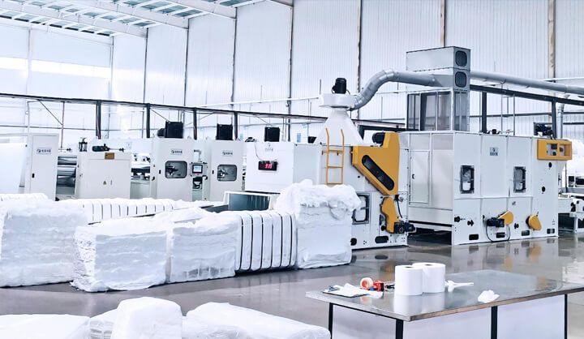

Home/Products/Air Slide Fabric & Aeration Pads

Polyester woven fabric that keeps powder flowing — air slides, silo aeration and tanker discharge.
Air slide fabric is the quiet hero of powder handling: sandwiched in an air slide chute, it lets low-pressure air pass evenly upward to fluidize the powder, so cement, alumina or fly ash flows down a slight incline like a liquid. If the fabric's permeability is uneven or it has blinded with moisture, the powder stalls and the whole conveying line stops.
We supply woven polyester air slide fabric cut to your channel width and length, sewn endless belts where the installation takes them, and aeration pads made to drawing for silo bottoms and hoppers. For mobile duty — bulk cement tankers — the same fabric is supplied cut to the trailer's aeration grid, a common replacement item for fleet operators.
Typical industry values — the exact specification for your order is confirmed in the quotation.
| Item | Typical Spec | Key Property | Typical Use |
|---|---|---|---|
| Air slide fabric (standard) | ≈ 400 g/m² | Uniform fluidizing permeability | Air slide chutes, conveying |
| Air slide fabric (heavy duty) | ≈ 480 g/m² | Higher wear resistance | Abrasive powder duty |
| Aeration pad | Made to drawing | Even air distribution | Silo bottoms, hoppers, tankers |
Typical values — width, thickness and permeability are confirmed per specification.
Send dimensions, duty conditions and quantity — quoted within 24 hours on working days.